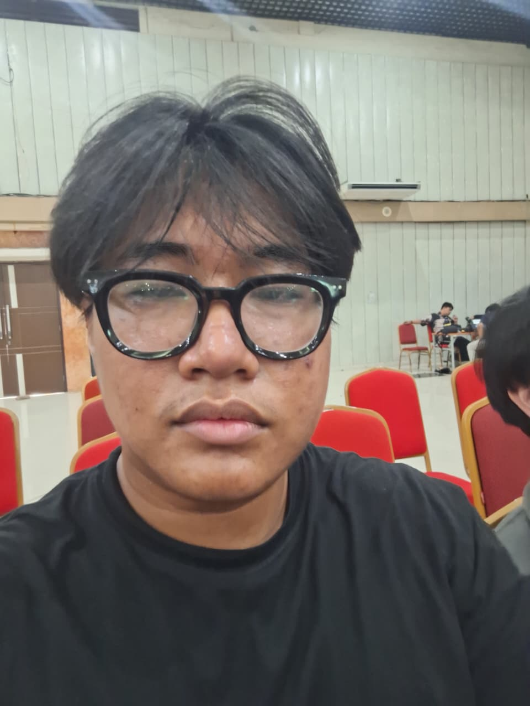

Materi Presentasi Seminar Internasional Forum Fair Trade Indonesia
Dunia bisnis saat ini sedang mengalami pergeseran paradigma dari yang awalnya hanya berorientasi pada profit menuju model bisnis yang lebih bertanggung jawab. Kerangka Environmental, Social, and Governance (ESG) kini telah menjadi standar bahasa universal dan evaluasi global bagi investor serta regulator.
Mengevaluasi pengelolaan emisi karbon, penggunaan air, efisiensi energi, dan pengelolaan limbah.
Menyoroti cara perusahaan memperlakukan pekerja, hak asasi, kesejahteraan, serta dampaknya terhadap konsumen dan komunitas.
Menuntut agar perusahaan memiliki sistem yang transparan, akuntabel, serta bebas dari korupsi.
Tidak adanya aturan atau panduan bertahap yang secara spesifik mewajibkan pelaporan keberlanjutan bagi UMKM.
Tingginya biaya investasi awal untuk teknologi hijau, sementara UMKM umumnya lebih membutuhkan keuntungan jangka pendek.
Banyak UMKM belum sepenuhnya memahami kerangka ESG sehingga rentan terjebak dalam praktik greenwashing secara tidak sengaja.
UMKM domestik murni berisiko tertinggal karena minimnya paparan dan tekanan dari pasar global, berbeda dengan UMKM di area pariwisata seperti Bali.
Fair Trade dipandang sebagai bentuk implementasi ESG yang sangat konkret karena mampu menjembatani nilai keberlanjutan dengan praktik perdagangan yang nyata. Penerapan Green Supply Chain Management terbukti secara signifikan dapat mengangkat kinerja keberlanjutan UMKM di negara berkembang. Transformasi keberlanjutan ini didorong oleh sinergi antara teknologi digital, inovasi hijau, dan proses berbagi pengetahuan.
Berdasarkan tinjauan terhadap 15 studi empiris, dampak ESG terhadap kinerja bisnis UMKM ternyata memberikan hasil yang kontradiktif dan bergantung pada konteks:
Menemukan bahwa penerapan ESG terbukti meningkatkan kinerja UMKM secara signifikan.
Menyimpulkan bahwa efek positif dari ESG hanya muncul pada kondisi/konteks tertentu.
Melaporkan bahwa ESG dapat merugikan karena mengalihkan fokus dari aktivitas inti.
Catatan Penting: Pola utamanya menunjukkan bahwa studi dengan temuan positif umumnya berfokus pada UMKM skala menengah hingga besar, sementara temuan negatif lebih banyak terjadi pada UMKM skala mikro.
Berikut adalah dokumentasi bukti kehadiran saat mengikuti Seminar Internasional Forum Fair Trade Indonesia pada tanggal 3 Juni 2026.
